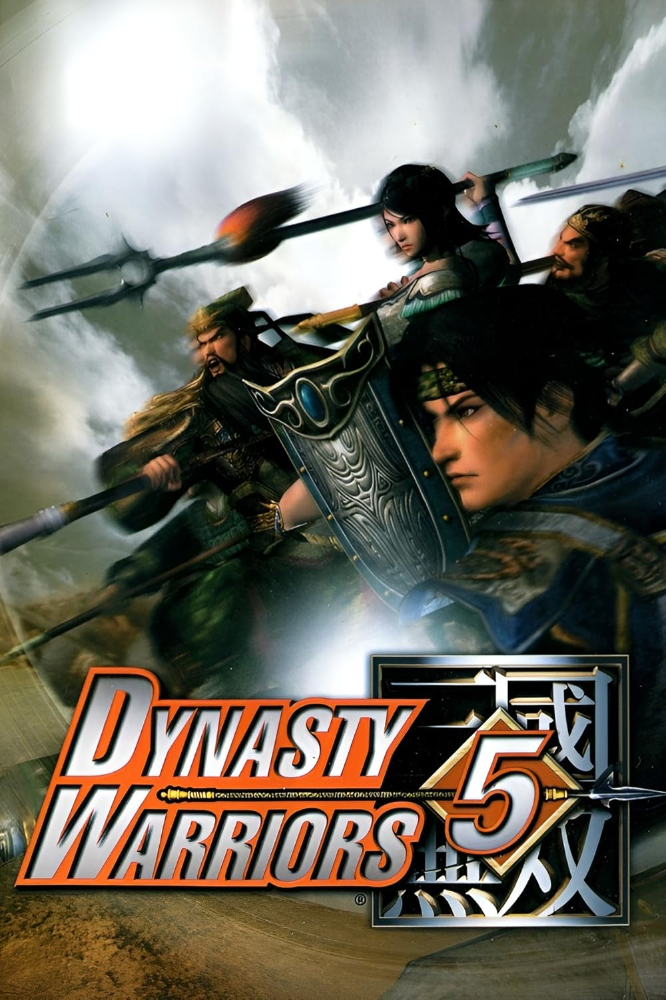
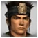
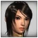
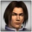
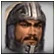
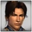

Dynasty Warriors 5
Dynasty Warriors 5 é um jogo eletrônico de hack and slash que se passa na China antiga e a quinta versão da série Dynasty Warriors, desenvolvida pela Omega Force e publicada pela Koei. O jogo foi lançado em 2005 para Playstation 2, Xbox, Xbox 360 e PC. E é baseada no Romance dos Três Reinos por Luo Guanzhong.
Jogabilidade
A jogabilidade de Dynasty Warriors 5 é baseada nas versões anteriores. É um jogo de hack and slash, beat 'em up e ação em 3D.
O jogo apresenta múltiplos modos. O Modo Musou apresenta um número de etapas de batalha cronologicamente consecutivas que giram em volta de um personagem escolhido, aumentado com animação e narração de histórias exprimida pelo personagem que fornece o contexto de batalhas e ações. O Modo Free permite que um jogador jogue níveis padrões e aqueles que foram concluídos no Modo Musou um após outro. Tanto o Modo Musou como o Modo Free permitem que joguem de forma cooperativa entre dois jogadores. O Modo Desafio (Challenge) introduz um número de etapas especializadas com desafios específicos, inclusive provas de tempo. A característica de Campo permite que o jogador inspecione itens destrancados, guarda-costas, e oficiais. A característica da Enciclopédia dá uma descrição de cada oficial em "Dynasty Warriors 5", inclusive cada personagem não jogável. As opções apresentam histórias e vídeos e oferecem jogabilidades e opções de apresentação ao jogador.
A característica forte vinda de Dynasty Warriors 4 também está presente em Dynasty Warriors 5. Esse aspecto de jogabilidade introduz bases ao campo de batalha. Bases aliadas podem precisar de proteção, enquanto destruir bases inimigas adquiri-se bônus para ataque, defesa ou musou e item de de restaurar a vida. Bases neutras também podem ser capturadas como pontos de estratégia.
Modos
Musou Mode
Substitui os cenários baseados em reinos do jogo anterior por histórias individuais para cada oficial. As batalhas são intercaladas com interlúdios narrados pelo personagem, retratando seus próprios pensamentos e perspectivas. O nível de dificuldade aumenta progressivamente a cada fase concluída.
Free Mode
Funciona da mesma forma que no jogo anterior, embora as fases agora estejam organizadas em ordem cronológica.
Challenge Mode
Funciona da mesma forma que no jogo anterior, embora apenas dois desafios anteriores tenham retornado. Embora a variedade de oficiais inimigos mude a cada ciclo (mas não mude ao selecionar a opção de reiniciar/tentar novamente), Lu Bu sempre aparecerá.
- Time Attack - Derrote rapidamente todos os cem inimigos dentro do Castelo Luo. Os inimigos geralmente vêm em grupos de 5 ou 10, então ser capaz de eliminá-los com o mínimo de movimentos possível é essencial.
- Rampage - Elimine o máximo de inimigos possível antes de ser derrotado ou quando o tempo acabar. Caso Lu Bu seja derrotado, ele deixará cair um Token Musou e fará com que os inimigos derrotados anteriormente retornem. O desafio ocorre dentro dos limites da Fortaleza de Nan An, em Tian Shui.
- Sudden Death - Na floresta ao norte de Mian Zhu, em Chengdu, o jogador deve derrotar o máximo de inimigos possível sem ser atingido por nenhum ataque. Qualquer tipo de ferimento resultará em nocaute instantâneo tanto para o jogador quanto para os inimigos. Um limite de tempo também é imposto, aumentando a pressão ao longo do jogo. Conforme o jogador derrota mais inimigos, atacantes indiretos, como arqueiros e feiticeiros, começarão a aparecer.
- Bridge Melee - Dentro de um cenário especial de castelo cercado por um fosso profundo, elimine o máximo de tropas inimigas possível, evitando ser derrotado ou perder o equilíbrio. Como é impossível reabastecer a barra Musou com ataques neste desafio, os jogadores podem optar por arriscar lutar em estado crítico para executar Ataques Musou com frequência.
Camp
Apresenta os personagens, armas, itens e guarda-costas obtidos até o momento.
Encyclopedia
Concentra-se em listar resumos biográficos para cada oficial. Uma seção de linha do tempo também está disponível.
Options
- Settings - Mantém as mensagens de evento ativadas ou desativadas durante as batalhas.
- Controls - Altera a configuração dos botões de acordo com as necessidades do jogador.
- Vibration - Ativa a vibração do controlador analógico
- Bow Control - Define o método de mira do arco para normal ou reverso.
- Setup - Reconfigura as funções dos botões no controle do jogo.
- Sound - Ajusta a música e os efeitos sonoros.
- Speaker - Define a saída de áudio das caixas de som através de quatro configurações diferentes: Dolby Digital Pro Logic II, Dolby Pro Logic II, Estéreo e Mono.
- BGM Volume - Ajusta o nível de volume da música de 1 a 16.
- SE Volume - Ajusta o nível de volume do som de 1 a 16.
- Sound Test - Permite ao jogador reproduzir diferentes faixas musicais.
- Screen Adjust - Ajusta a posição da tela usando os botões direcionais. Pode ser revertida ao estado original tocando no botão Iniciar.
- Save/Load - Permite ao jogador salvar seu progresso ou carregar um arquivo salvo anteriormente.
- Movies - Assista a filmes desbloqueados no Modo Musou
Personagens
Este jogo inclui os mesmos personagens de Dynasty Warriors 4 e mais seis personagens novos, mostrando ser o jogo com maior escala de personagens de toda a série.
Novos personagens:

Guan Ping
Xing Cai
Cao Pi
Pang De
Ling Tong- Zuo Ci
Créditos reservados a Koei Tecmo Wiki